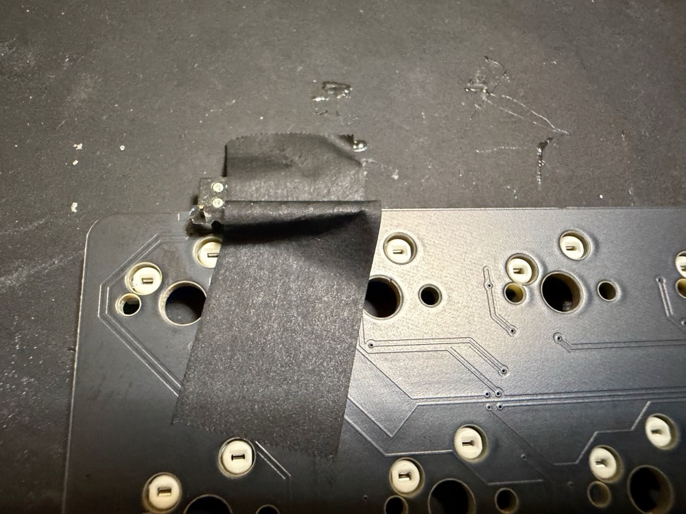
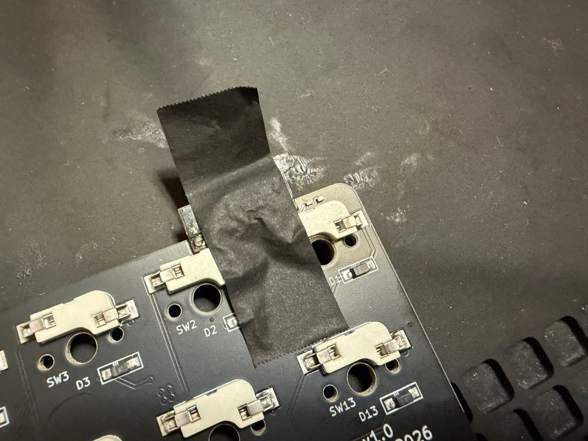
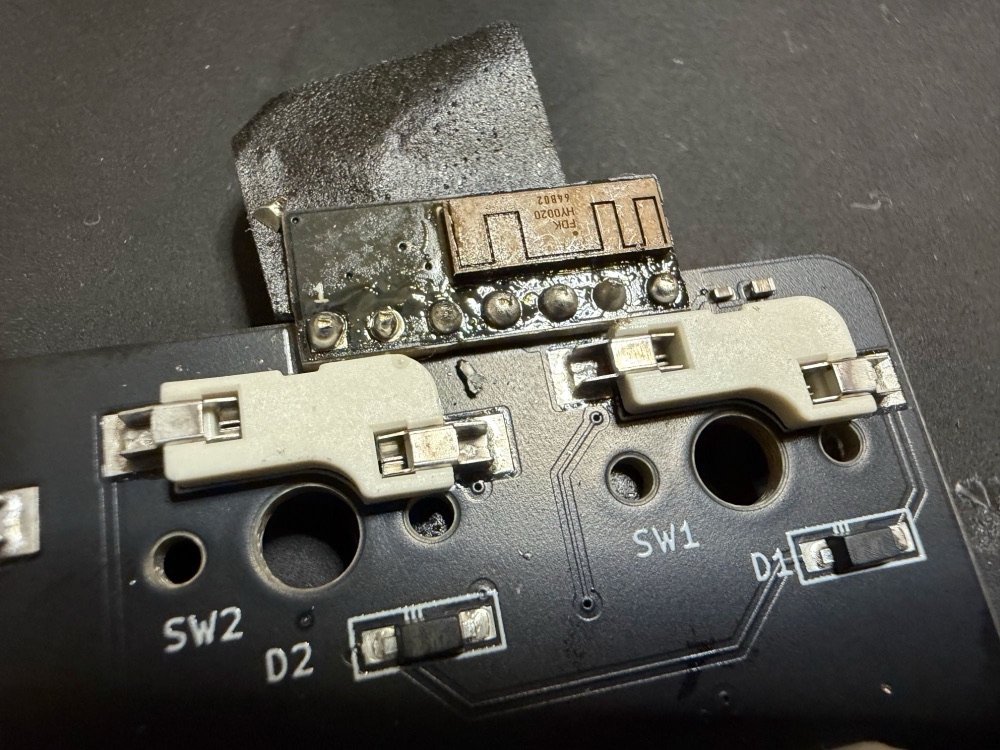
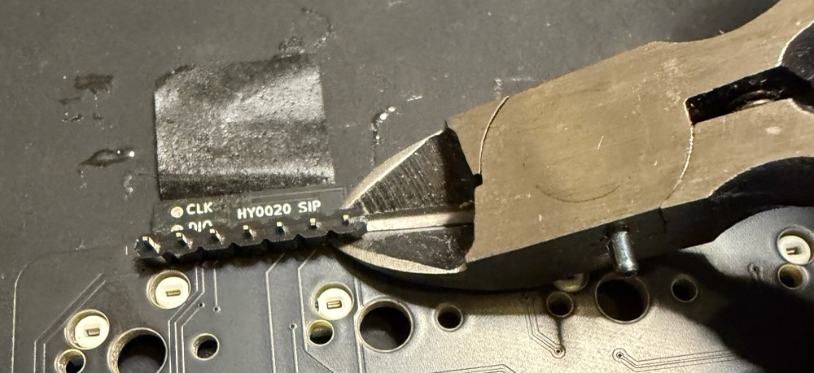
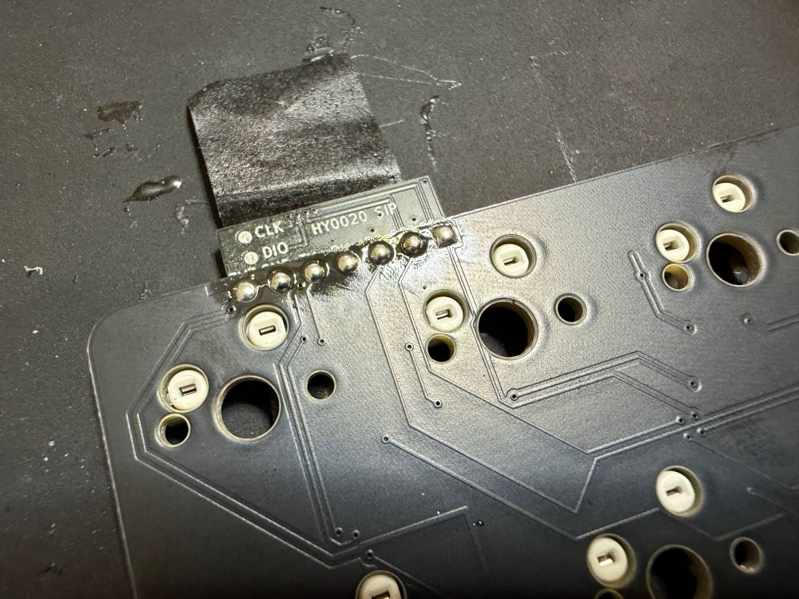
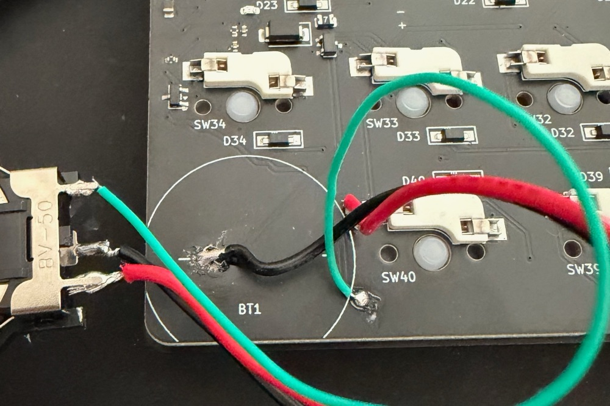
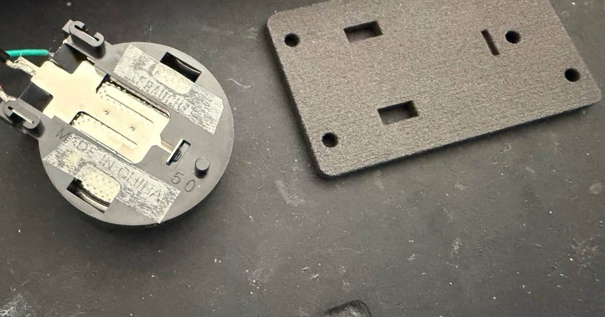
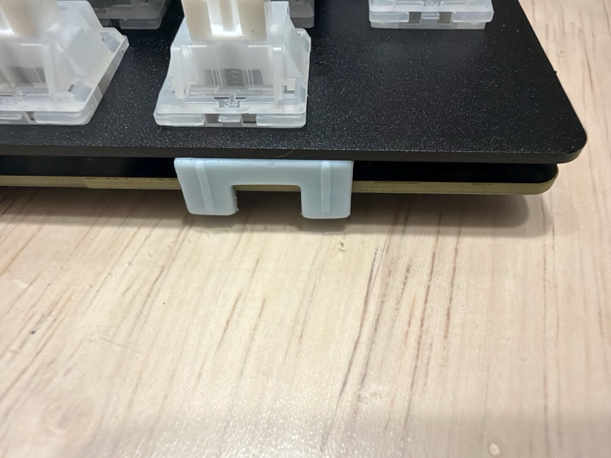
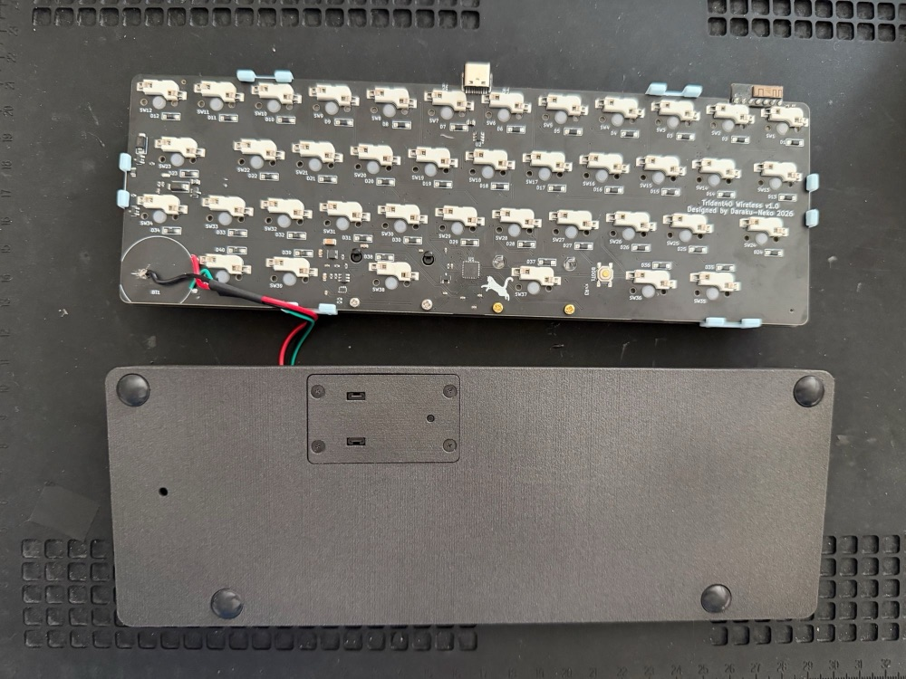
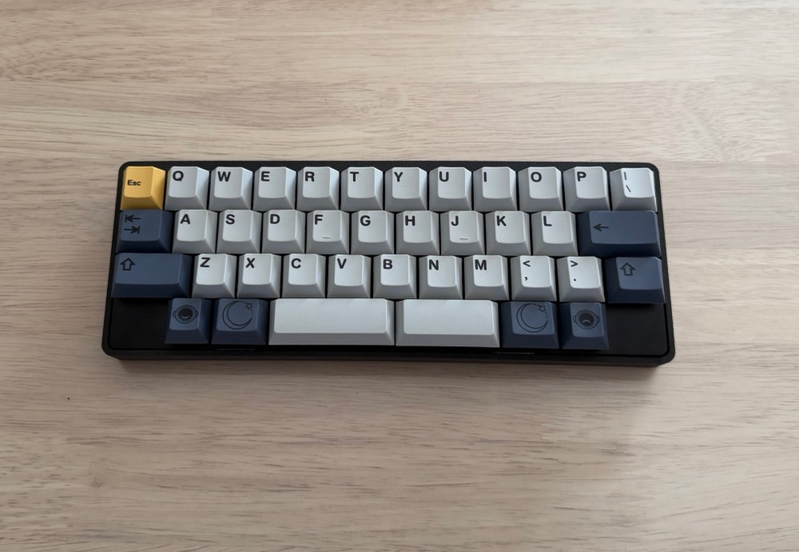

Trident40 Wireless ビルドガイド
USB でも BLE（無線）でも使える 40 キーのキーボードです。
無線のときはコイン電池 CR2450 1 個で動きます。
Vial のファームウェアを搭載したキーボードが、そのまま無線で動きます。
BLE モジュール HY0020 のリフロー、はんだ付け、ファームウェアの書き込み、ケースの組み立てまでの手順です。
1. 用意するもの
キット内容
| 部品 | 数 | メモ |
|---|---|---|
| メインプレート | 1 枚 | 表面実装部品とホットスワップソケットは実装済み。 HY0020 SIP を取り付けるだけで使える |
| トッププレート | 1 枚 | アルミ 1.5 mm |
| ケース一式（SLS 製） | 1 組 | ケース本体、電池ホルダーを付ける底の蓋 |
| M2 × 5 mm ネジ | 4 本 | 底の蓋を留める |
| ゴム足 | 4 個 | ケースの底に貼る |
| 電池ホルダー BV-50N | 1 個 | CR2450 用 |
| ワイヤー | 3 本 | 両端の被覆むき済み。 電池ホルダーとメインプレートをつなぐ |
| HY0020 UART チェッカー | 1 枚 | リフローした HY0020 SIP を、メインプレートに付ける前に確かめる基板。 UART でつなぐ HY0020 SIP 専用 |
| HY0020 SIP 基板 | 2 枚 | HY0020 をリフローして載せる小さな基板。 1 枚は予備 |
| 細ピンヘッダー（1×7） | 1 本 | HY0020 SIP をメインプレートに付けるのに使う |
必要な工具
はんだごて
はんだ
はんだペースト
リフローに使うもの（ホットプレートやホットエアーなど）
ピンセット
ニッパー
マスキングテープ
両面テープ
ドライバー
USB Type-C ケーブル（データ通信対応）
パソコン（Chrome / Edge が動くもの）
ご自身で用意して頂くパーツ
| 部品 | 数 | メモ |
|---|---|---|
| HY0020 ブートローダー書込済（秋月電子、BLE モジュール単体） | 1 個 | https://akizukidenshi.com/catalog/g/g131343/ リフローに慣れていない場合は、複数個買っておくと安心です |
| コンスルー（2.54 mm ピッチ、ニッパーなどで 7 ピンに切って使う、高さは問わない） | 1 本 | https://shop.yushakobo.jp/products/31 https://shop.talpkeyboard.com/collections/mac8conthrough |
| PCBSnap | 1 セット（6 個） | https://shop.yushakobo.jp/products/12660 https://rabbit0-store.com/products/geon-x-nuxros-pcbsnap |
| MX 互換スイッチ | 40 個 | |
| スタビライザー（2U、PCB マウント） | 2 個 | |
| キーキャップ（配列は右の画像を参考にする） | 40 個 | https://booth.pximg.net/3a4d6577-cfc5-4ca5-92b6-a2b233b974d5/i/9203688/84d9b278-72d9-4d0d-b74e-72e1ac9a488a.png |
| コイン電池 CR2450 | 1 個 |

2. HY0020 のリフロー
HY0020 を HY0020 SIP 基板にリフローします。
温度の条件は、HY0020 のアプリケーションノートの「3 はんだ付け（リフロー）プロファイル」を参考にしてください。
https://www.fdk.co.jp/product/electronic_components/module/pdf/HY0020_AppNote.pdf
作業は、お使いの機器の案内に従ってください。

リフローの例（ホットプレート）。
HY0020 のパッドはモジュールの裏にあり、はんだ付けの状態を目で確かめられません。
次の手順のチェッカーで確かめます。
3. チェッカーで確認
メインプレートに付ける前に、リフローした HY0020 SIP が動くことを確かめます。
ここで書き込む確認用ファームウェアは、あとで本体から無線用のファームウェアを書き込むときにも使います。
必ず書き込んでおいてください。
チェッカーの詳しい説明は、HY0020 UART チェッカーのビルドガイドにあります。
- コンスルーをニッパーなどで 7 ピンに切る。
- コンスルーを HY0020 UART チェッカーにはんだ付けする。
はんだ付けするのはチェッカーの側だけで、HY0020 SIP の側は抜き差しする。 - チェッカーのコンスルーに、HY0020 を上にして HY0020 SIP を挿す。
- USB でパソコンにつなぐ。
D2（電源）が点灯する。 - Chrome か Edge で HY0020 UART Checker のページを開き、確認用ファームウェアを書き込む。
- ページのシリアルモニターに、デバイス ID・BLE アドレス・電圧・温度が出ることを確かめる。
- パソコンやスマートフォンの Bluetooth の一覧に「HY0020 XXXX」が出ることを確かめる。
D1 は接続待ちのあいだ 2 回ずつ点滅し、SW2 を押している間は点灯する。
書き込みで「No data received」と出て、ボタンを押しても変わらないときは、HY0020 のはんだ不良のことが多いです。
リフローし直してください。
4. HY0020 SIP のはんだ付け
メインプレートは、ホットスワップソケットまで実装済みです。
はんだ付けするのは HY0020 SIP だけです。
HY0020 SIP は、メインプレートの裏面（ホットスワップソケットの面）の U5 に、すき間を空けずに直接重ねます。
HY0020 のモジュールをメインプレートと反対側に向け、アンテナがメインプレートの外に出る向きにします。
- 細ピンヘッダーを表面（スイッチの面）から、メインプレートと HY0020 SIP の両方に通す。
プラスチックの部分は表面に残る。 - はんだ付けする面の反対側を、マスキングテープで固定する。
表面は細ピンヘッダーのプラスチックを、裏面は HY0020 SIP を押さえる。

- 裏面（HY0020 SIP の側）をはんだ付けする。

- 表面のピンを、プラスチックごとニッパーで切る。

- 表面もはんだ付けする。
両面ともはんだ付けが必要。
| 項目 | 内容 |
|---|---|
| HY0020 SIP の向き | 1 番ピンが DFU。 HY0020 はメインプレートと反対側を向き、アンテナはメインプレートの外（左奥）に出る |
| ピンの並び | 1 DFU / 2 RST / 3 IRQ / 4 RX / 5 TX / 6 GND / 7 3V3 |
向きを逆に付けると動きません。
はんだ付けの前に、ピンの番号とアンテナの向きを確かめてください。
5. スタビライザー、プレート、スイッチ
- スタビライザー（2U、PCB マウント）2 個をメインプレートに取り付ける。
- トッププレートにスイッチをはめる。
- スイッチの足を曲げないように、メインプレートのソケットに差し込む。
スタビライザーは、トッププレートとスイッチを付けたあとでは取り付けられません。
最初に付けてください。
キーが入力できるかは、次の「6. ファームウェアの書き込み」でキーボード本体に書き込んだあと、Vial や Pipette で確かめます。
次の手順でキーを押すので、ここでスイッチを付けておきます。
ケースにはまだ入れません（BOOT1 ボタンはケースに入れると押せません）。
6. ファームウェアの書き込み
Chrome か Edge で 書き込みページを開きます。
キーボード本体（STM32）と無線モジュール（HY0020）の 2 つを、この順に書き込みます。
電池はまだつなぎません。
キーボード本体（STM32）
- メインプレートの BOOT1 ボタンを押したまま、USB でパソコンにつなぐ（つないだらボタンは離してよい）。
- 書き込みページの「2. キーボード本体（STM32）」の「書き込む」を押し、一覧から「STM32 BOOTLOADER」を選んで「接続」を押す。
- 「完了」と出るまで待つ。
終わるとキーボードとして認識され、USB でキーが打てる。
キーの確認
Vial や Pipette を開いて、すべてのキーが入力できるか確かめます。
入力できないキーがあるときは、そのキーのスイッチの足が曲がっていないかを確かめてください。
確認が済んだら、Vial や Pipette は閉じます（開いたままだと、次の無線モジュールの書き込みができません）。
無線モジュール（HY0020）
- USB でつないだまま、書き込みページの「3. 無線モジュール（HY0020）」の「書き込む」を押し、一覧から「Trident40 Wireless」を選んで「接続」を押す。
- 「BT_UPDT を押してください」と出たら、キーボードで BT_UPDT を押す。
- 「完了」と出るまで待つ（1 分ほど）。
BT_UPDT はレイヤー 3 の P の位置にあります。
Space（または Backspace）を押したまま、最下段の MO(3) を押し、そのまま P を押します。
Windows で「STM32 BOOTLOADER」が一覧に出ないときは、Zadig で「STM32 BOOTLOADER」に WinUSB ドライバーを入れてください。
7. 電池ホルダー
USB を抜いてから作業します。
- 付属のワイヤー 3 本を、電池ホルダー BV-50N の端子にはんだ付けする。
＋（外側の端子）に 2 本、−（中央の端子）に 1 本つなぐ。
はんだ付けしたところに、熱収縮チューブをかぶせてもよい。 - ワイヤーをメインプレートの BT1 の穴にはんだ付けする。
− の印がある穴に − を、残りの穴に ＋ をつなぐ。
＋ と − を間違えない。
- 電池ホルダー BV-50N を、底の蓋の内側に両面テープで貼る。
ホルダーの裏の突起を、蓋の穴に合わせる。
- CR2450 をホルダーに入れる。
写真では、黒のワイヤーが −、緑と赤のワイヤーが ＋ です。
＋ と − を逆につなぐと、メインプレートの赤い LED（D43）が光ります。
光ったときは、すぐに電池を外してつなぎ直してください。
逆につないでも壊れないように保護回路が入っていますが、LED が電池を消費します。
8. ケースの組み立て
- PCBSnap 6 個を、トッププレートとメインプレートの間に入れる。
前に 2 個、後ろに 2 個、左右に 1 個ずつ。

- ワイヤーを挟まないように、ケースに入れて押し込む。
- 最後に、電池ホルダーを付けた底の蓋を、ネジ 4 本で留める。
- ゴム足 4 個を、ケースの底の四隅のくぼみに貼る。
- キーキャップを付ける。

9. 動作確認
- USB でつないで、すべてのキーが打てることを確かめる。
- USB を抜いて、何かキーを押す。
パソコンやスマートフォンの Bluetooth の設定に「Trident40 Wireless」が出るので、接続（ペアリング）する。 - 電池だけでキーが打てることを確かめる。
- BAT_LVL（レイヤー 3 の B の位置）を押すと、電池の残量が文字で入力される。
10. 使い方
USB と BLE
USB でパソコンにつないでいるときは USB、そうでないときは BLE で入力します。
切り替えは自動です。
別の機器で使う
使う機器それぞれで、最初に一度ペアリングしておきます。
別の機器で使うときは、今つながっている機器の側で Bluetooth を切る（または接続を解除する）と、もう一方の機器からつながります。
キーボードの側で接続先を番号で切り替える機能は、実装していません。
切り替えるたびに無線モジュールが内部の保存領域を書き換え、コイン電池に大きな電流が流れて電池を消耗するためです。
ソースコードを公開しているので、切り替えの機能が必要な場合は、ご自身で実装できます。
ワイヤレス用のキー
| キー | 動作 | 既定の位置 |
|---|---|---|
| BAT_LVL | 電池の残量を文字で入力する | レイヤー 3、B の位置 |
| BT_UPDT | 無線モジュール（HY0020）の書き込みモード。 USB でつないでいるときだけ効く。 もう一度押すか USB を抜くと戻る | レイヤー 3、P の位置 |
| QK_BOOT | キーボード本体（STM32）の書き込みモード。 USB でつないでいるときだけ効く | レイヤー 3、右上 |
レイヤー 3 には、Space か Backspace（レイヤー 1）を押したまま、最下段の MO(3) を押して入ります。
電池の残量
BAT_LVL を押すと「95% 2964mV now 2927mV」のように入力されます。
| 表示 | 内容 |
|---|---|
| 95% 2964mV | 残量と、その元になる電圧。 キーを打っていないときに何回か測った値の中央値で、接続先の機器の電池表示にも同じ残量が出る |
| now 2927mV | キーを押した瞬間の電圧。 打っている間は少し下がる |
| --% now 3031mV | 電池を入れた直後。 残量はまだ測れていない（1〜2 分で出る） |
コイン電池は、残りが少なくなるまで電圧があまり下がりません。
残量の表示は目安です。
省電力
5 分間どこにもつながらないと、無線モジュールは電源オフに近い状態になります。
キーを押すと起きて、つなぎ直します（その 1 文字目は入力されません）。
接続中に打たずに置いているときは、そのまま 1 文字目から打てます。
消費電流（参考）
| 状態 | 電流 |
|---|---|
| BLE 接続中の待機 | 約 15〜20 µA |
| 接続待ち | 約 40〜70 µA |
| 5 分つながらなかったあと | 約 9 µA |
部品のデータシートから計算した値で、実測ではありません。
打っている間はこれより多く流れます。
電池の交換
ケースの底のネジ 4 本を外し、蓋ごと電池ホルダーを引き出して、CR2450 を入れ替えます。
ワイヤーを引っぱらないように注意してください。
Vial
キーボード本体は、Vial（vial-qmk）のファームウェアで動いています。
Vial プロトコル互換のファームウェアではなく、Vial そのものが無線で動きます。
キーマップは、USB でも、BLE でつないだままでも、Vial で変更できます。
ロックの解除は Esc と Q の同時押しです。
ワイヤレス用のキーは、Vial の「User」のキーの一覧にあります。
11. ファームウェアの更新
書き込みページで、組み立てたあとも更新できます。
USB でつないで、キーボード本体（STM32）と無線モジュール（HY0020）の両方を書き込みます。
| 対象 | 手順 |
|---|---|
| キーボード本体（STM32） | 「DFU モードにする」を押してキーボードを選び、BT_UPDT を押す。 そのあと「書き込む」を押して「STM32 BOOTLOADER」を選ぶ |
| 無線モジュール（HY0020） | 「書き込む」を押してキーボードを選び、BT_UPDT を押す |
キーボード本体を書き込むと、キーマップは既定に戻ります。
Vial で変更していた場合は、先に Vial でキーマップを保存しておいてください。
キーボード本体の書き込みモード（DFU）に入ったら、書き込みが終わるまで USB を抜かないでください。
途中で抜くと、電池を外して入れ直すまで動かなくなります（リセットボタンがなく、電池が電源を保つためです）。
ペアリング情報の初期化
ペアリングし直しても電源を入れ直すとつながらない、といったときは、書き込みページの「初期化だけ行う」でペアリング情報を消せます。
USB でパソコンにつないでいるときだけ使えます。
消したあとは、接続先の機器からも「Trident40 Wireless」を削除して、ペアリングし直してください。
12. 困ったとき
| 症状 | 対処 |
|---|---|
| 書き込みページの一覧にキーボードが 2 つ出る | 同じパソコンに BLE でもつながっている。 USB でつないでいるほうを選ぶ。 分からないときは、パソコンの Bluetooth をいったん切る |
| 無線モジュールの書き込みで「応答がありません」と出る | もう一度「書き込む」を押してやり直す。 表示が出てから BT_UPDT を押す |
| BT_UPDT を押しても書き込みが始まらない | USB でパソコンにつないでいるか確かめる。 Vial など、キーボードを使うアプリは閉じる |
| キーボード本体の書き込みモードから戻らない | USB をつないだまま、書き込みページでキーボード本体を書き込む。 USB を抜いてしまったときは、電池を外して入れ直す |
| キーボード本体が起動しない・書き込みモードに入れない | メインプレートをケースから出して電池を外し、BOOT1 ボタンを押したまま USB をつなぐ |
| BLE でつながらなくなった | 接続先の機器から「Trident40 Wireless」を削除して、ペアリングし直す。 直らないときは「ペアリング情報の初期化」を行う |
| 電池を入れると赤い LED が光る | 電池の ＋ と − が逆。 すぐに電池を外し、ワイヤーをつなぎ直す |
13. ソースコード
ファームウェアと書き込みページのソースコードは github.com/darakuneko/keyboard で公開しています（wireless/ と qmk/trident40_wireless/）。
キーボード本体（STM32）の QMK / Vial のソースコードだけを使うときは、zip でダウンロードできます。
trident40_wireless.zip